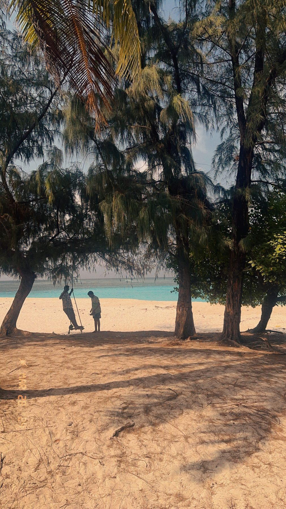
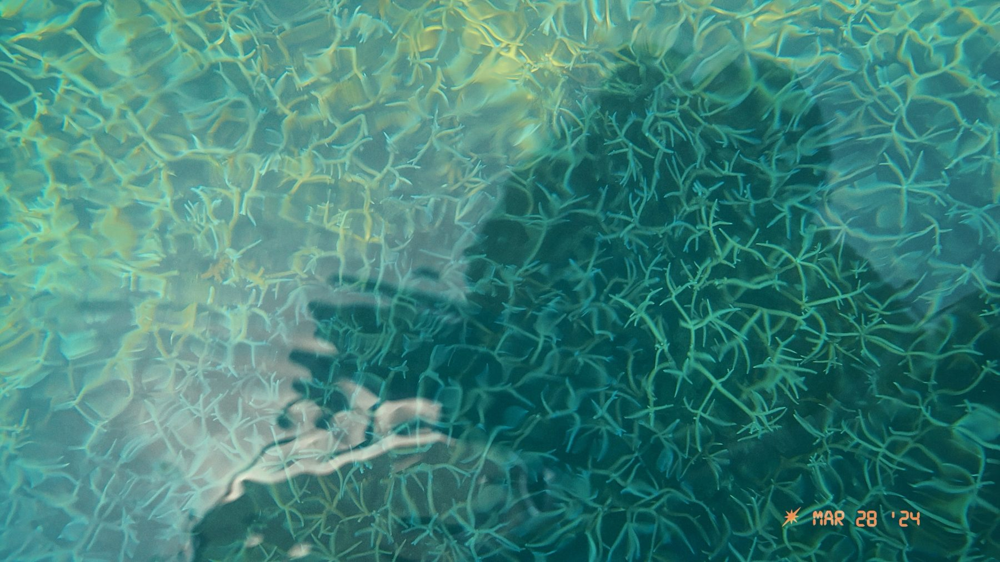
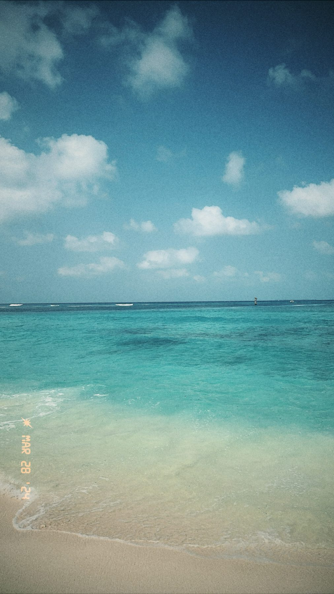
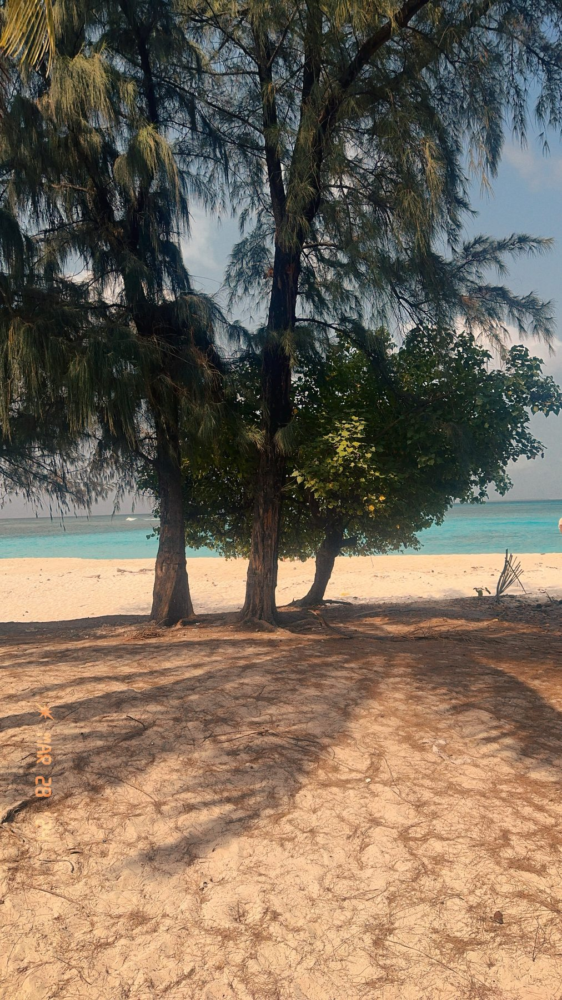
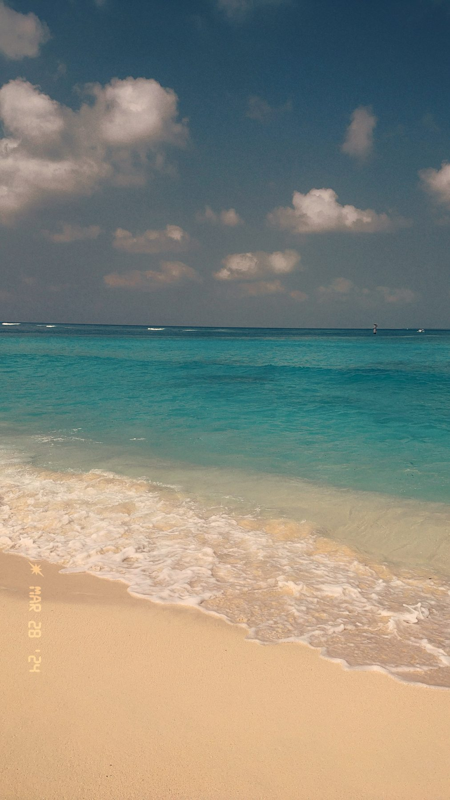
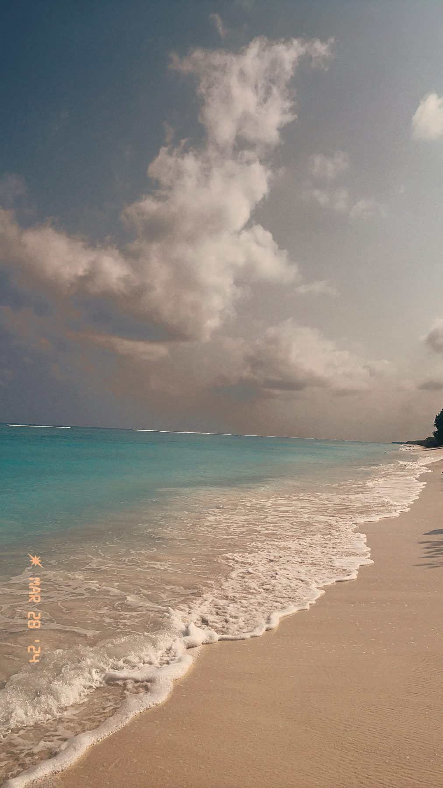

— end of roll · Lakshadweep —
Six frames from the atolls. Casuarina shade, a lagoon you can read the bottom of, and weather that builds all afternoon and never quite arrives. Shot on a phone, date stamp left on.






— end of roll · Lakshadweep —